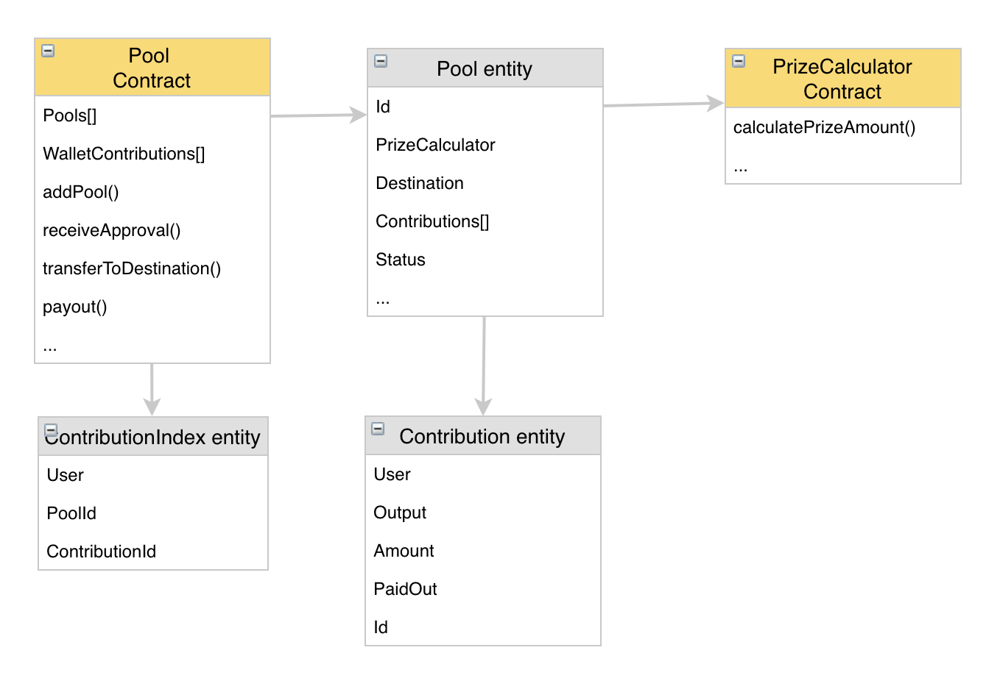

Pools structure¶
Blockchain Part¶
Full view:
Pools Contract¶
The main contract will be Pools contract which holds:
- AIX Balance of all pools
- All actions Events
- Available pools list
- Contributors contribution details
Pool
This entity holds all contributions and address to PrizeCalculator. Full Entity structure:
- id - 32 symbols hash
- contributionStartUtc - (UNIX timestamp) Start date when the pool starts to accept contributions.
- contributionEndUtc - (UNIX timestamp) End date until which the pool accept contributions.
- destination - address of the product to which this pool is dedicated.
- status -
- NotSet (0)
- Active (1) - the pool is ready for contributions. Initial status.
- Distributing (2) - insurance product is ended and rewards are ready.
- Funded (3) - pool contributions are ended and funds are sent to the insurance product.
- Paused (4) - the pool is paused by administrators.
- Canceled (5) - some issue happened and refunds for this pool contributors will happen.
- amountLimit - limit how much tokens pool will collect
- amountCollected - a number of tokens were collected.
- amountDistributing - a number of tokens will be distributed as a reward.
- paidout - a number of tokens were already paid out.
- prizeCalculator - address of reward formula calculator.
- contributions - an array of contributions:
- id - 32 symbols hash
- owner - contribution owner wallet address
- amount - contribution size in AIX tokens
- paidout - if the pool is canceled or pool distributing - an amount which was transferred for user
Pools functions
- initialize - pools owner setup contract
- addPool - owner can add pool and update in case of issue
- setPoolStatus - owner can change pool status
- setPoolAmountDistributing - owner set pool for distributing.
- receiveApproval - AIX token will call this function to setup contribution
- transferToDestination - transfer pool AIX tokens amount to destination.
- payout - function to take contribution rewards
- refund - if pool was canseled users using this function will get refund.
View functions are used, because of current solidity limitations
- getContribution - ability to read contribution details
Safety functions
- withdrawETH - withdraw all ethers in case something wrong will be found
- withdrawTokens - withdraw all tokens in case something wrong will be found
- pause - pause pools contract in case something wrong will be found
Prize calculator contract¶
This contract stores formula how much contributor can withdraw:
Function to calculate reward amount:
- calculatePrizeAmount
At first version we use simples reward distribution formula:
Your contributed tokens (_contributionTokens) * _distributeTotalTokens / _collectedTotalTokens = reward
Example:
A pool collected 2000 tokens reserve:
User A placed 1500 tokens
User B placed 500 tokens
After insurance product ended and return 2800 tokens as leftover to pool.
Users can now withdraw the following token amount from their contribution:
User A -> 1500 * 2800 / 2000 = 2100 Tokens
User B -> 500 * 2800 / 2000 = 700 Tokens
Platform Part¶
Platform API:¶
REST api service for other applications. Users can use to integrate with the platform. Addresses can be found at developers wiki page https://aigangnetwork.github.io/
Platform WEB:¶
Aigang team maintainable web interface working on top of REST API.
Background services:¶
Aigang.Transactions.Listener service - helps to maintain blockchain transactions statuses. Example: when contribution receives payment transaction this service activate contribution and update status to “Paid”.
General pool statuses in platform:¶
- Active (1) - pool is ready to accept contributions. Initial status.
- Distributing (2) - the pool is distributing rewards.
- Funded (3) - Contributing is ended and collected pool is sent to destination.
- Paused (4) - contribution in this pool is paused and administrators are investigating what is happening
- Canceled (5) - some issue happened and refunds for this pool contributors will happen.
- Closed (7) - final state when all rewards are taken.
General contribution statuses in platform:¶
- PendingPayment (1) - contribution payment was initialized.
- Paid (2) - contribution was received.
- Canceled (3) - contribution is canceled because paiment was not received in 24 hours.
- AvailablePayout (4) - reward is available to you to take out.
- AvailableRefund (7) - pool is canceled and you can refund your tokens.
- RewardPaidout (6) - reward was successful and tokens was sent to a user.
- PendingPayout (5) - payout transactions were submited and the platform is waiting until it will be commited.
- RefundPaidout (8) - refund was successful and tokens was sent to a user.